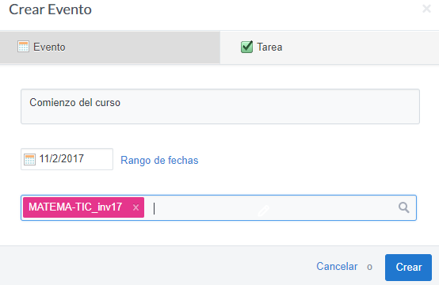

Edmodo, ¿una red social para el aula?
Disponer de una red social para nuestros alumnos nos va a permitir varias cosas. Todo depende de cómo y para qué lo usemos. Y Edmodo es lo que se autodefine como una red social educativa. De hecho, recuerda mucho a Facebook (hasta en los colores que han elegido). No es sorprendente que algún alumno señale esta semejanza la primera vez que lo presentas en una clase («¡Anda, si es como Facebook!»). En realidad, Edmodo se engloba dentro de las herramientas que permiten el blended learning o aprendizaje semipresencial. Como decía Sorando en sus blogs, ¡la clase sigue en casa!
¿Por qué Edmodo y no otra cosa?
Edmodo es una aplicación gratuita, por lo menos, de momento. Hay extras, como quitar la publicidad, que requieren el pago de una cuota, pero si no molestan, tampoco es necesario.
A los profesores nos gusta que todo esté muy bien estructurado y organizado, que los foros estén clasificados con hilos, etc. Además, es habitual que hayamos participado en algún curso en línea, y lo normal es que esté en una plataforma basada en codigo libre que se llama Moodle. Así que pensamos que una buena opción para utilizar con nuestro alumnado es Moodle. Y Moodle está bien, es software libre y ofrece un montón de posibilidades. Quizá demasiadas si lo que queremos hacer es:
- Disponer de un canal de comunicación ágil con nuestros alumnos con el que además se puedan compartir documentos.
- Asignar tareas.
- Programar eventos en el calendario, como fechas de exámenes, entregas, actividades, etc.
- Mensajería con padres y alumnos.
- Poner calificaciones.
Permisos
Debemos ser cuidadosos con la utilización de herramientas que implican la recogida de información personal, fotografías, etc. Edmodo está pensada desde un principio para el ámbito educativo. Tanto es así, que ni siquiera es obligatorio tener una cuenta de correo para registrarse como estudiante. Evidentemente, utilizar la cuenta de correo permite un mejor seguimiento, ya que así los alumnos reciben correos con avisos de lo que ocurre en la clase virtual. En cualquier caso, debemos contar con la autorización de los padres si nuestros alumnos son menores de cierta edad.
Debemos atenernos a dos marcos legislativos, como bien indica J.J. de Haro, y que ahora vamos a resumir teniendo en mente la utilización de Edmodo:
Por un lado, tenemos los términos del servicio. Edmodo indica que es necesario contar con el consentimiento de los padres o tutores legales de los menores de 13 años de edad para utilizar el servicio. De lo contrario, si advierten que un menor está usando la plataforma sin ese consentimiento, proceden a borrar los datos.
Por otro lado está la legislación española, en la forma del Real Decreto 1720/2007, de 21 de diciembre y la Ley de la Propiedad Intelectual. El RD 1720/2007 nos dice que los datos personales de los alumnos de 14 o más años pueden ser gestionados por ellos mismos. Sin embargo, la publicación de trabajos por parte de los alumnos, se atiene a la Ley de Propiedad Intelectual, que no especifica una edad concreta, siendo por tanto necesaria la autorización de los padres si el alumno es menor de 18 años. Como Edmodo es una red privada y la exposición de trabajos en su seno es similar a colgar murales en clase o en el centro educativo, en principio sólo sería obligado pedir autorización cuando los alumnos tuvieran menos de 14 años. Pero si te quieres curar en salud, es recomendable pedirla también para menores de 18 años.
En resumen, que para utilizar Edmodo con nuestros alumnos en España:
- Obligatorio pedir autorización si son menores de 14 años.
- Recomendable si son menores de 18 años.
Desde este enlace, podemos descargar un modelo de carta de autorización para usar Edmodo. Tampoco estaría de más echar un vistazo a la Guía para centros educativos de la Agencia Española de Protección de Datos.
Funcionalidad básica
Crear una clase y añadir alumnos
Acto seguido, nos salta una ventanita con instrucciones sobre cómo hemos de añadir alumnos.
Lo más importante es ese código que aparece, aunque también nos genera un pdf personalizado con las instrucciones, por si queremos utilizarlo directamente. Sin embaro, el código es todo lo que necesitan los alumnos para «matricularse» en tu clase recién creada. Algo muy habitual es, sencillamente, mostrar la clase recién creada con el proyector o escribir ese código en la pizarra de clase.
Enviar mensajes, mandar tareas, encuestas...
Lo primero que ve una persona cuando accede a una clase de Edmodo es algo similar a un muro de Facebook. Es decir, una línea temporal con los últimos mensajes que se han ido mandando. El profesor decide si, en cada momento, hay un mensaje fijo que aparece siempre el primero, o no. Podría ser el caso, por ejemplo, de un recordatorio sobre una actividad extraescolar, o sobre la entrega de un trabajo importante.
Compartir documentos
Podemos tener todos los materiales que utilizamos normalmente de forma organizada en carpetas. Posteriormente, ya en el menú de un grupo particular, podemos seleccionar qué carpeta queremos compartir con dicho grupo. Es más, en ese momento podemos crear una nueva.
Vincular Google Drive a la biblioteca
Si tenemos muchos materiales organizados en Google Drive, tenemos la opción de vincular la cuenta de Google Drive a nuestra cuenta de Edmodo.
Para ello:
- Entramos en la «biblioteca», haciendo click en el icono de la barra de herramientas superior.
- Seleccionamos Google Drive. en el panel izquierdo.
- Le damos a «Conectar con Google Drive» y seguimos los pasos. Básicamente, nos pedirá nuestra cuenta de google.
Conviene observar que los archivos en la sección «Google Drive» aparecen ordenados por la última fecha de modificación, en primer lugar los más recientes.
Programar eventos
Para acceder al calendario pincharemos en el icono del calendario.
Es posible crear un evento directamente en el calendario, pinchando en el día elegido (ojo que las fechas las formatean en plan anglosajón, primero el mes y luego el día):

Aunque si hubiésemos asignado alguna tarea con fecha de entrega, también la veríamos en el calendario con el color del grupo correspondiente:
Calificar
En Edmodo podemos llevar un registro de las notas de los alumnos. Nosotros, como profesores, podremos ver -obviamente- las calificaciones de todos los alumnos, añadir nuevas calificaciones, etc. Sin embargo, cada alumno solamente podrá ver las suyas y, cada padre, madre o tutor, solamente podrá ver las de su hijo.
Escribir matemáticas
Los profesores de matemáticas debemos de ser muy especiales. Como ya hemos visto, muchas aplicaciones ofimáticas se olvidan de que existimos y de que necesitamos escribir símbolos «extraños» de vez en cuando. Así, resulta gratificante cuando GitBook y su empleo de markdown nos facilitan insertar cosas como:
sin más que escribir e^{i x} = \cos x + i\,\sin xentre signos de dólar.
Edmodo nos da dos opciones para escribir matemáticas. Por un lado, nos sugiere que, para símbolos matemáticos simples, utilicemos www.typeit.org y después hagamos un copy-paste de los símbolos en Edmodo. Pero nosotros vamos a recomendar el segundo método. Y es que Edmodo permite utilizar la sintaxis de LaTeX. Para incluir una ecuación en una Nota (mensaje) de Edmodo, simplemente rodea la anotación en LaTeX con [math] … [/math]. Esto generará una imagen de la ecuación en cuestión que se mostrará en el mensaje. Ejemplos extraídos de la página de soporte de Edmodo:
Una página donde se puede practicar fácilmente esto de escribir ecuaciones y expresiones matemáticas en LaTeX es Codecogs, pues nos permite ir introduciendo cada elemento desde un menú de iconos.
Por otro lado, debemos decir que Edmodo acepta también markdown.
Para saber más (referencias)
- Beltrán-Pellicer, P. (2015). Modelo de carta de autorización para emplear Edmodo. Disponible en www.tierradenumeros.com
- Ufi de Alcañiz. Manual/curso de Edmodo.